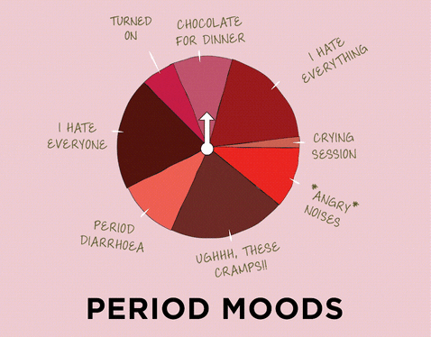
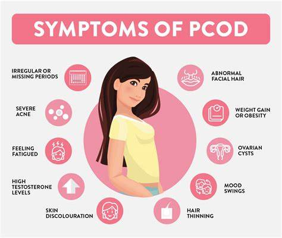

What is Hormonal Imbalance?
Definition: Hormonal imbalance occurs when the intricate system of hormone production in your body becomes disrupted. Imagine a complex orchestra where each instrument represents a hormone. The conductor, your endocrine system, meticulously coordinates their production to maintain harmony in various bodily functions. When one hormone is out of tune (produced in excess or too little), it throws the entire orchestra into disarray, leading to a cascade of effects.
Common Symptoms:
- Fatigue: Feeling constantly drained can be a sign of several hormonal imbalances.
Excess Progesterone: Progesterone, produced by the ovaries, helps regulate the menstrual cycle and prepares the body for pregnancy. However, excessively high levels can cause drowsiness and fatigue.
Underactive Thyroid: The thyroid gland produces hormones that control metabolism, energy production, and cell function. When the thyroid is underactive (hypothyroidism), it produces insufficient hormones, leading to fatigue and sluggishness.
- Mood Swings: Hormonal fluctuations can significantly impact your emotional state.
Sex Hormones: Estrogen and progesterone, crucial for the menstrual cycle, can cause mood swings, irritability, and anxiety before your period (PMS) or during menopause.
Stress Hormones: Chronic stress triggers the release of cortisol, which can contribute to anxiety and depression over time.
 - Weight Gain or Loss: Unexplained changes in weight can be linked to hormonal imbalances,
impacting metabolism and appetite:
Metabolism: The thyroid hormone plays a vital role in regulating metabolism. An underactive thyroid (hypothyroidism) slows down metabolism, making it easier to gain weight and harder to lose it. Excess cortisol can also lead to weight gain by promoting fat storage.
Appetite: Certain hormones, like leptin and ghrelin, regulate hunger and satiety. Imbalances in these hormones can lead to increased appetite and difficulty feeling full, contributing to weight gain. Conversely, hormonal changes during menopause can sometimes cause a decrease in appetite and unintended weight loss.
- Irregular Periods: For people assigned female at birth (AFAB), hormonal imbalances often manifest
in disrupted menstrual cycles.
Polycystic Ovary Syndrome (PCOS)/Polycystic Ovary Disorder (PCOD): This hormonal disorder is a common culprit behind irregular or infrequent periods. It's characterized by an imbalance of various hormones, including:
Androgens: Women with PCOS/PCOD often have excess androgen (male sex hormones) levels, which can lead to increased facial and body hair growth, and contribute to irregular ovulation and periods.
Estrogen and Progesterone: Disruptions in the production of these hormones can further contribute to irregular or absent periods and difficulty getting pregnant.
Stress: Chronic stress can disrupt the production of hormones like gonadotropin-releasing hormone (GnRH), which is crucial for ovulation and regulating the menstrual cycle.
Risk Factors:
Several factors can increase your risk of developing hormonal imbalances:
Genetics: Certain conditions with a genetic component, like PCOS, can predispose you to hormonal imbalances.
Lifestyle:
Diet: A diet high in processed foods, refined sugars, and unhealthy fats can disrupt hormone production and contribute to weight gain, further impacting hormone balance.
Exercise: Lack of physical activity can lead to weight gain and insulin resistance, which can affect hormone levels, particularly those involved in blood sugar control.
Sleep:Chronic sleep deprivation disrupts the production of hormones like melatonin, which regulates sleep-wake cycles, and growth hormone, essential for cell repair and regeneration.
Environmental Factors: Exposure to environmental toxins, such as pesticides and industrial chemicals, can mimic or interfere with the action of natural hormones in the body. Some medications can also have hormonal side effects.
Causes of Hormonal Imbalance
Lifestyle Factors: Hormonal imbalances can occur due to unhealthy lifestyle choices such as poor diet, lack of exercise, and chronic stress. These factors can disrupt hormone production and regulation in the body.
Medical Conditions: Certain medical conditions like thyroid disorders, diabetes, and polycystic ovary syndrome (PCOS) can lead to hormonal imbalances. These conditions affect hormone levels and metabolism.
Environmental Influences: Exposure to environmental toxins, such as chemicals in household products, plastics, and pollution, may interfere with hormone function and contribute to imbalances.
Effects of Hormonal Imbalance
Physical Effects: Hormonal imbalances can manifest in various physical symptoms, including irregular menstrual cycles, acne breakouts, weight gain, and hair thinning or loss.
Emotional Effects: Fluctuations in hormone levels can impact mood stability, leading to symptoms such as irritability, anxiety, depression, and difficulty concentrating.
Long-term Health Risks: Untreated hormonal imbalances may increase the risk of long-term health complications such as infertility, osteoporosis, cardiovascular disease, and certain cancers.